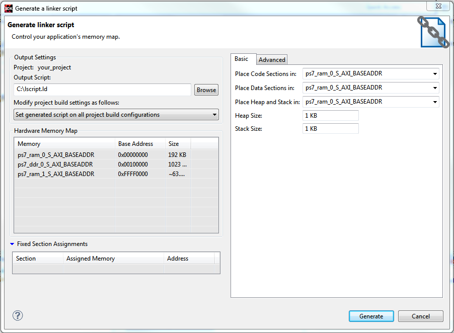

Configure the following sections of the Linker Script Generator
dialog box Basic tab. Placing these key sections into the appropriate
memory region can improve performance. Use the drop-down menu next to the
code, data, and heap or stack sections to select the region and type of
memory that you want these blocks to reside in.
- Code Sections: This is used to store the executable code (instructions).
Typically DDR memory is used for this task. Sometimes interrupt handlers or frequently used
functions are built into separate sections and can be mapped to lower latency memory such as
BRAM or OCM.
- Data Sections: Place initialized and uninitialized data in this region. Often
DDR memory is used; however, if the data size requirements are small, OCM or BRAM can be
used to improve performance.
- Heap and Stack: Heap is accessed through dynamic memory allocation calls such
as malloc(). These sections are typically left in DDR unless they are known to be small, in
which case they can be placed in OCM or BRAM. If the stack is lightly used, no significant
performance loss will occur if left in DDR.
- Heap Size: Specify the heap size. Even if a programmer doesn’t use dynamic
memory allocation explicitly, there are some functions that use the heap such as printf().
It is a good idea to allocate a few K for such functions, as a precaution.
- Stack Size: Specify the stack size. Remember that the stack size grows down in
memory and could overrun the heap without warning. Make certain that you allocate enough
memory, especially if you use recursive functions or deep hierarchies.
